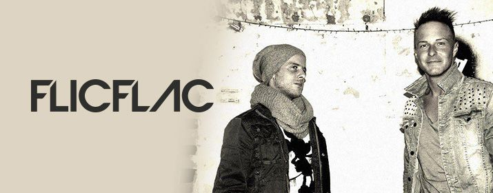

Mainstage: 22:00-23:00!
Max Gain & Kevin Richi alias FlicFlac kommen aus Österreich und lernten sich auf
einer Party auf Ibiza kennen. Um 5 Uhr morgens begannen sie ihre ersten
gemeinsamen Beats im Hotelzimmer zu produzieren. Zurück in Wien führte der erste
Weg ins Studio und ihr erstes gemeinsames Projekt Tonightentstand.
Ihren Durchbruch feierten sie mit ihren Remixen von All We Arevon Jonah und
Riptidevon Vance Joy.
FlicFlac bezeichnen ihre Tracks, mit einem Schmunzeln, als „Elektronische Musik
auch für Leute, die eigentlich keine elektronische Musik mögen".
Das Wiener-Duo kann bereits Auftritte und Bookings in Frankreich, Deutschland,
Österreich, Italien, Rumänien, der Schweiz, den Niederlanden, Brasilien und den USA
vorweisen. Zuletzt spielten FlicFlac auf der Winter Music Conference in Miami.